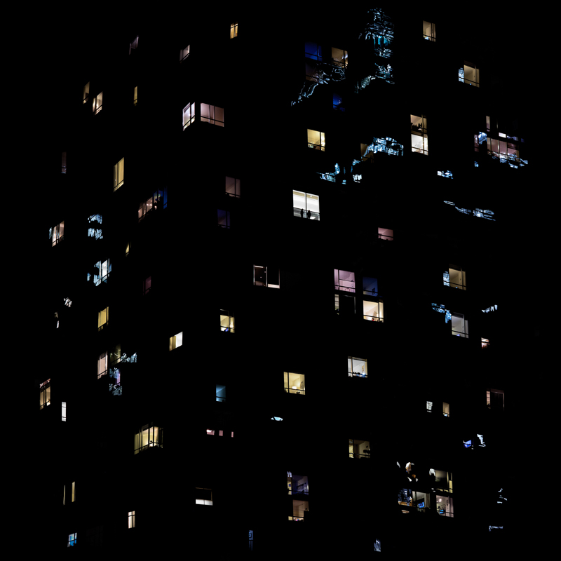
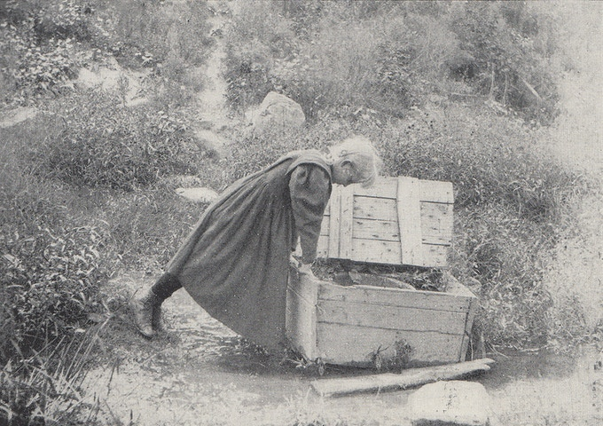

Featured Works
Photographer Misan Harriman
News

Light Hunters-
Art About the Street: Street Photography by
Clarissa Bonet

Between Love and Obsession -
The Photography of Stanley Greenberg

Connection and Purpose -
The Photography of Cheriss May